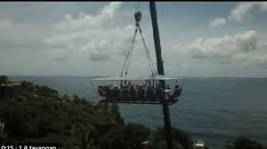

Ngopi in the Sky
Sensasi di Ketinggian dan Risiko Gaya - Analisis Fisika Wahana Viral Yogyakarta

Wahana wisata Ngopi in the Sky di Pantai Nguluran, Yogyakarta, sempat menjadi viral karena menawarkan pengalaman unik menikmati kopi di ketinggian sekitar 30 meter di atas tanah. Pengunjung duduk di kursi yang terpasang pada sebuah gondola, lalu diangkat menggunakan mobile crane yang biasanya digunakan untuk mengangkat barang berat.
Dalam satu kali angkat, gondola dapat membawa sekitar 20 orang dengan total massa mencapai kurang lebih 5 ton. Gondola tersebut digantung menggunakan tali baja dan berada tepat di tepi pantai, sehingga terkena hembusan angin laut yang cukup kencang. Saat berada di atas, beberapa pengunjung merasakan kursi sedikit bergoyang dan lantai gondola terasa licin.
Pemerintah Daerah Istimewa Yogyakarta kemudian menghentikan operasional wahana ini karena dinilai berisiko terhadap keselamatan pengunjung. Salah satu kekhawatiran utama adalah kemampuan crane dan sistem gantungannya dalam menahan beban manusia yang diam maupun yang bergerak.
Secara fisika, gondola yang membawa pengunjung mengalami berbagai gaya:
- Gaya Berat akibat pengaruh gravitasi bumi
- Gaya Normal dari kursi yang menahan tubuh pengunjung
- Gaya Gesek antara sepatu pengunjung dan lantai gondola